IEEE Conference on Computer Vision and Pattern Recognition (CVPR), 2026
We propose a personalized head representation that disentangles expression and identity for highly expressive portrait video synthesis.
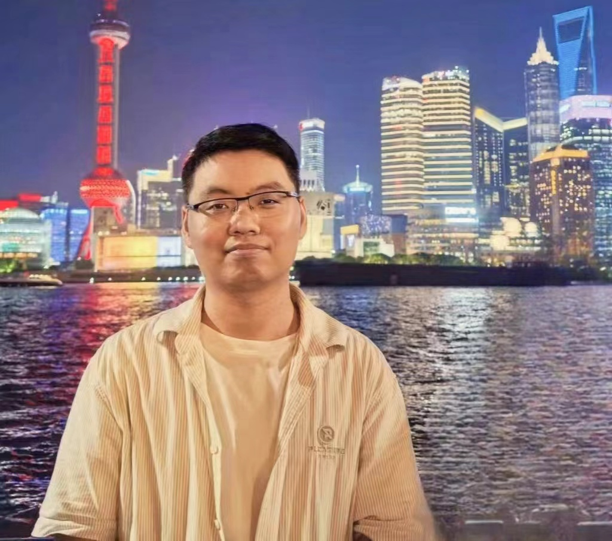
I am an assistant professor at University of Science and Technology of China (USTC). I got my Ph.D. degree from USTC in 2021, supervised by Prof. Juyong Zhang. Before that, I received bachelor degree in Statistics in 2015 from USTC. From fall 2016 to spring 2017, I was a research assistant in the MultiMedia Lab at Nanyang Technological University under supervision of Prof. Jianfei Cai and Prof. Jianmin Zheng. My research interests include 3D vision and digital human.


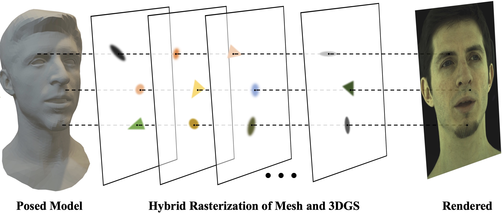
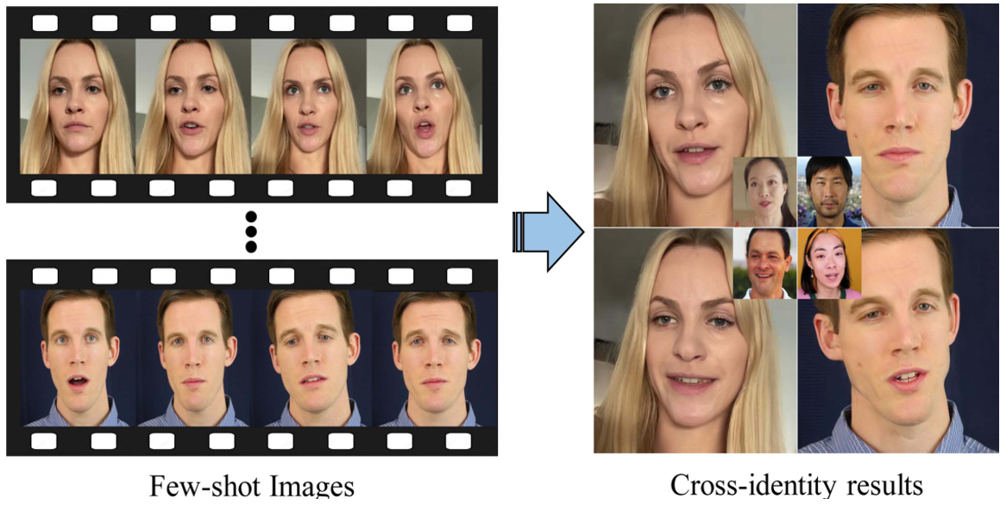
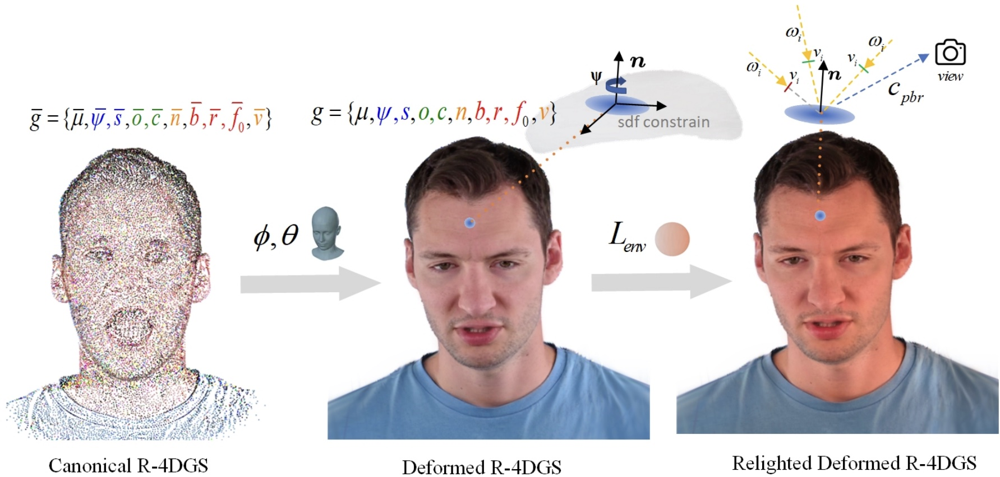
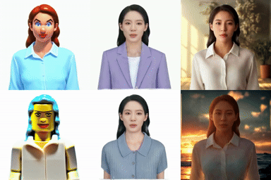
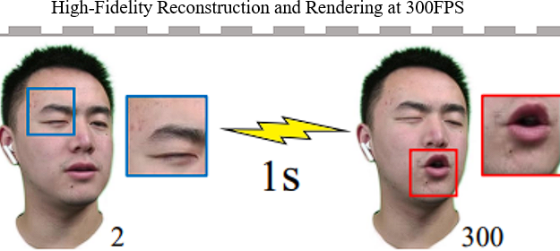
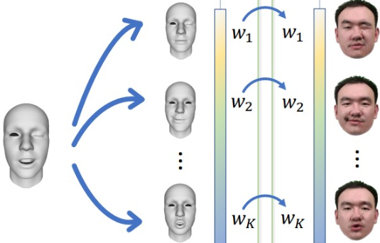
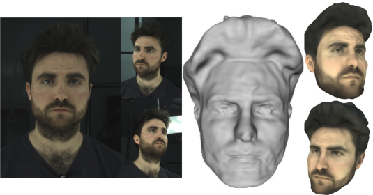
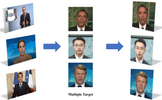
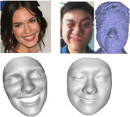
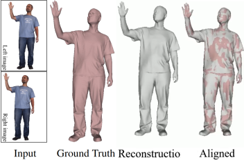
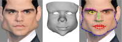
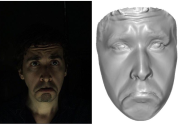
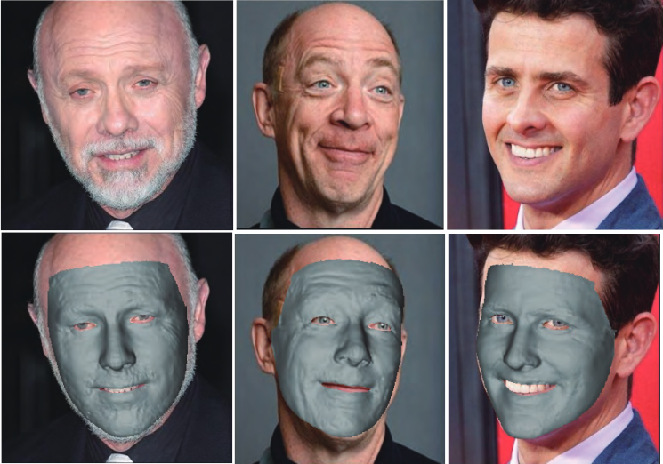